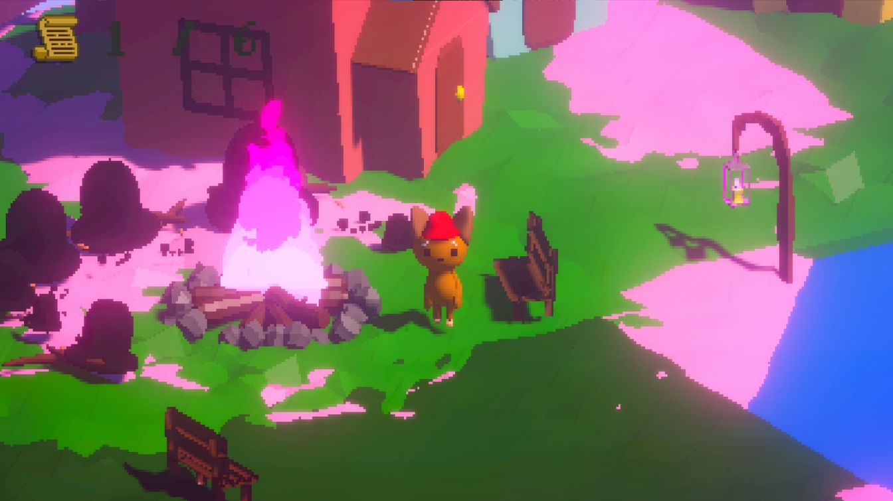

Projets
Ce que j'ai construit.
4 étudiants
CTF « Case 404 » →
Plateforme CTFd pour l'association Yggame : 30 challenges sur 9 catégories, infrastructure Docker Compose + Portainer + Nginx filtré par IP, plugins CTFd sur mesure. Note 19,5/20, en ligne.

3 étudiants
E-commerce PHP MVC
Architecture MVC avec contrôleur frontal, panier en session, commandes et historique en base SQL, CRUD d'administration, hachage des mots de passe avec sel et poivre. Note 17,25/20.

équipe de 6
Code Game Jam 2025
30 h à l'Ob.i LAB Montpellier, thème « Mélodie à l'Infini » : les Quatre Saisons de Vivaldi en 8-bit, la carte change toutes les 30 s. Game design, modélisation Blender, intégration. Prix design global et 2ᵉ place locale.

Backtest de stratégies d'investissement
Application Python 3.13 : graphiques interactifs matplotlib, gestionnaire de stratégies en interface graphique (ajouter, dupliquer, supprimer), préréglages en JSON, journaux CSV et XLSX pour chaque jour analysé.